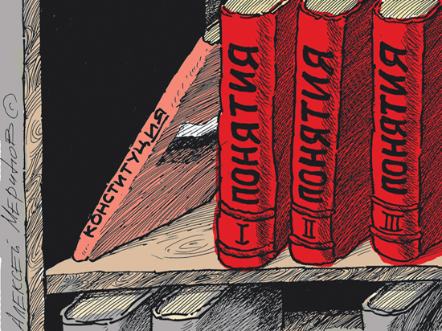

Борис Майоров
После принятия Конституции России в 1993 году в устных выступлениях и в публикациях интернет я обращал внимание руководителей и населения на необходимость введения в Общевоинские уставы понятия достоинства человека и с последующим отказом от подневольного призыва в Армию.
К 2007 году этот вопрос был формально решён – в уставы ввели понятие достоинства человека. Однако проходят десятилетия, а достоинство в бывшем советском человеке и переход на профессиональную Армию так и не прижились.
Одна из причин, на мой взгляд, это то, что Конституция связала достоинство человека с честью гражданина. Понятие перегружено смыслами и затрудняет его восприятие для человека молодого и пожилого, помнящего государственное рабство.
Есть и другие причины, почему включённые в Уставы яркие выражения не работают в полном объёме. Надеюсь, что глубокий анализ эффективности Конституции и Уставов есть где-то в отчётах Академии наук, но я не нашёл.
Последние случаи издевательств над подневольными солдатами, проходящими срочную службу в Вооружённых Силах России, оставления солдата в опасности и неспособность других служб оказать помощь человеку подвигли меня вновь осуществить анализ Общевоинских уставов на предмет упоминания в них понятия достоинства человека, военнослужащего.
На сайте http://www.consultant.ru/, можно открыть или скачать Общевоинские уставы и через F3 найти на сайте или в скаченном файле все абзацы с основой слова «достоинств».
УСТАВ ВНУТРЕННЕЙ СЛУЖБЫ ВООРУЖЕННЫХ СИЛ РОССИЙСКОЙ ФЕДЕРАЦИИ
ЧАСТЬ ПЕРВАЯ
ВОЕННОСЛУЖАЩИЕ И ВЗАИМООТНОШЕНИЯ МЕЖДУ НИМИ
Глава 1. ПРАВА,
ОБЯЗАННОСТИ И ОТВЕТСТВЕННОСТЬ ВОЕННОСЛУЖАЩИХ
Общие положения
Военнослужащий считается исполняющим обязанности военной службы в случаях:
...
н) защиты жизни, здоровья, чести и достоинства личности;
Общие обязанности военнослужащих
...
16. Военнослужащий в служебной деятельности руководствуется Конституцией Российской Федерации, федеральными конституционными законами, федеральными законами, общевоинскими уставами и иными нормативными правовыми актами Российской Федерации.
Защита государственного суверенитета и территориальной целостности Российской Федерации, обеспечение безопасности государства, отражение вооруженного нападения, а также выполнение задач в соответствии с международными обязательствами Российской Федерации составляют существо воинского долга, который обязывает военнослужащего:
...
дорожить воинской честью и боевой славой Вооруженных Сил, своей воинской части, честью своего воинского звания и войсковым товариществом, с достоинством нести высокое звание защитника народа Российской Федерации;
...
19. Военнослужащий обязан уважать честь и достоинство других военнослужащих, выручать их из опасности, помогать им словом и делом, удерживать от недостойных поступков, не допускать в отношении себя и других военнослужащих грубости и издевательства, содействовать командирам (начальникам) и старшим в поддержании порядка и дисциплины. Он должен соблюдать правила воинской вежливости, поведения, выполнения воинского приветствия, ношения военной формы одежды и знаков различия.
Обо всех случаях, которые могут повлиять на исполнение военнослужащим его обязанностей, а также о сделанных ему замечаниях он обязан докладывать своему непосредственному начальнику.
За нарушение уставных правил взаимоотношений между военнослужащими, связанное с унижением чести и достоинства, издевательством или сопряженное с насилием, а также за оскорбление одним военнослужащим другого виновные привлекаются к дисциплинарной ответственности, а при установлении в их действиях состава преступления - к уголовной ответственности.
23. …
Военнослужащий, захваченный противником в плен, при допросе имеет право сообщить только свою фамилию, имя, отчество, воинское звание, дату рождения и личный номер. Он обязан сохранять честь и достоинство, не разглашать государственную тайну, проявлять стойкость и мужество, помогать другим военнослужащим, находящимся в плену, удерживать их от пособничества противнику, отвергать попытки противника использовать военнослужащего для нанесения ущерба Российской Федерации и ее Вооруженным Силам.
32. …
При привлечении военнослужащих к ответственности недопустимо ущемление их чести и достоинства.
Глава 2. ВЗАИМООТНОШЕНИЯ МЕЖДУ ВОЕННОСЛУЖАЩИМИ
Единоначалие. Командиры (начальники) и подчиненные.
Старшие и младшие
34. …
Начальник имеет право отдавать подчиненному приказы и требовать их исполнения. Он должен быть для подчиненного примером тактичности, выдержанности и не должен допускать фамильярности и предвзятости по отношению к нему. За действия, унижающие честь и достоинство подчиненного, начальник несет ответственность.
О воинской вежливости и поведении военнослужащих
67. Военнослужащие должны постоянно служить примером высокой культуры, скромности и выдержанности, свято блюсти воинскую честь, защищать свое достоинство и уважать достоинство других. Они должны помнить, что по их поведению судят не только о них, но и о Вооруженных Силах в целом.
…
Искажение воинских званий, употребление нецензурных слов, кличек и прозвищ, грубость и фамильярное обращение несовместимы с понятием воинской чести и достоинством военнослужащего.
70. …
Военнослужащие должны быть вежливыми по отношению к гражданскому населению, проявлять особое внимание к инвалидам, пожилым людям, женщинам и детям, способствовать защите чести и достоинства граждан, а также оказывать им помощь при несчастных случаях, пожарах и других чрезвычайных ситуациях природного и техногенного характера.
…
72. Трезвый образ жизни должен быть повседневной нормой поведения всех военнослужащих. Появление на улицах, в скверах, парках, транспортных средствах общего пользования, других общественных местах в состоянии опьянения является дисциплинарным проступком, позорящим честь и достоинство военнослужащего.
…
Глава 3. ОБЯЗАННОСТИ КОМАНДИРОВ (НАЧАЛЬНИКОВ) И ОСНОВНЫХ
ДОЛЖНОСТНЫХ ЛИЦ ПОЛКА (КОРАБЛЯ)
Общие обязанности командиров (начальников)
78. Командир (начальник) на основе задач, решаемых в государстве и Вооруженных Силах, обязан постоянно воспитывать подчиненных военнослужащих:
…
проявлять чуткость и внимательность к подчиненным, не допускать в отношении их бестактности и грубости, сочетать высокую требовательность и принципиальность с уважением их личного достоинства;
161. Солдат (матрос) обязан:
…
оказывать уважение командирам (начальникам) и старшим, уважать честь и достоинство товарищей по службе, соблюдать правила воинской вежливости, поведения, ношения военной формы одежды и выполнения воинского приветствия;
…
при нахождении вне расположения полка вести себя с достоинством и честью, не совершать административных правонарушений, не допускать недостойных поступков по отношению к гражданскому населению.
…
ЧАСТЬ ВТОРАЯ
ВНУТРЕННИЙ ПОРЯДОК
Общие положения
Внутренний порядок достигается:
знанием, пониманием, сознательным и точным исполнением всеми военнослужащими обязанностей, определенных федеральными законами, общевоинскими уставами и иными нормативными правовыми актами Российской Федерации;
целенаправленной воспитательной работой, сочетанием высокой требовательности командиров (начальников) с постоянной заботой о подчиненных и об охране их здоровья;
организацией боевой подготовки;
образцовым несением боевого дежурства (боевой службы) и службы в суточном наряде;
точным выполнением распорядка дня и регламента служебного времени;
соблюдением правил эксплуатации вооружения, военной техники и другого военного имущества;
созданием в местах расположения военнослужащих условий для их повседневной деятельности, жизни и быта, отвечающих требованиям общевоинских уставов;
соблюдением безопасных условий военной службы, обеспечивающих защищенность военнослужащих, местного населения и окружающей среды от опасностей, возникающих в ходе выполнения мероприятий повседневной деятельности воинской части (подразделения).
…
ДИСЦИПЛИНАРНЫЙ УСТАВ ВООРУЖЕННЫХ СИЛ РОССИЙСКОЙ ФЕДЕРАЦИИ
Глава 1. ОБЩИЕ ПОЛОЖЕНИЯ
…
2. Воинская дисциплина основывается на осознании каждым военнослужащим воинского долга и личной ответственности за защиту Российской Федерации. Она строится на правовой основе, уважении чести и достоинства военнослужащих.
3. Воинская дисциплина обязывает каждого военнослужащего:
…
вести себя с достоинством в общественных местах, не допускать самому и удерживать других от недостойных поступков, содействовать защите чести и достоинства граждан;
4. Воинская дисциплина достигается:
…
повседневной требовательностью командиров (начальников) к подчиненным и контролем за их исполнительностью, уважением личного достоинства военнослужащих и постоянной заботой о них, умелым сочетанием и правильным применением мер убеждения, принуждения и общественного воздействия коллектива;
6. В целях поддержания воинской дисциплины в воинской части (подразделении) командир обязан:
…
воспитывать подчиненных военнослужащих в духе неукоснительного выполнения требований воинской дисциплины и высокой исполнительности, развивать и поддерживать у них чувство собственного достоинства, сознание воинской чести и воинского долга, создавать в воинской части (подразделении) нетерпимое отношение к нарушениям воинской дисциплины, обеспечивать на основе гласности их правовую и социальную защиту;
…
Уважение личного достоинства военнослужащих, забота об их правовой и социальной защите - важнейшая обязанность командира (начальника).
7. Командир (начальник) должен знать нужды и запросы подчиненных, добиваться их удовлетворения, не допускать грубости и унижения личного достоинства подчиненных, служить образцом строгого соблюдения законов Российской Федерации, других нормативных правовых актов Российской Федерации и требований общевоинских уставов, быть примером нравственности, честности, скромности и справедливости.
49. …
При привлечении военнослужащего к дисциплинарной ответственности не допускаются унижение его личного достоинства, причинение ему физических страданий и проявление по отношению к нему грубости.
98. …
Военнослужащему, к которому применено дисциплинарное взыскание - снижение в воинском звании на одну ступень - при объявлении взыскания определяется время для замены соответствующих знаков различия. Запрещаются срывание погон, срезание нашивок и другие действия, унижающие личное достоинство военнослужащего.
…
УСТАВ ГАРНИЗОННОЙ И КАРАУЛЬНОЙ СЛУЖБ ВООРУЖЕННЫХ СИЛ
РОССИЙСКОЙ ФЕДЕРАЦИИ
…
Часовой
204. Часовой есть лицо неприкосновенное. Неприкосновенность часового заключается:
в особой охране законодательством Российской Федерации его прав и личного достоинства;
.

-------------------------------
Дополнительная информация на моих сайтах:
- https://sites.google.com/site/dignity21k/ -
03.12.2010.